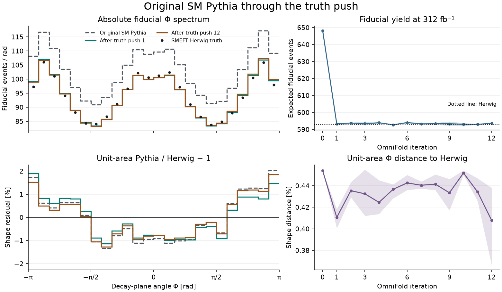
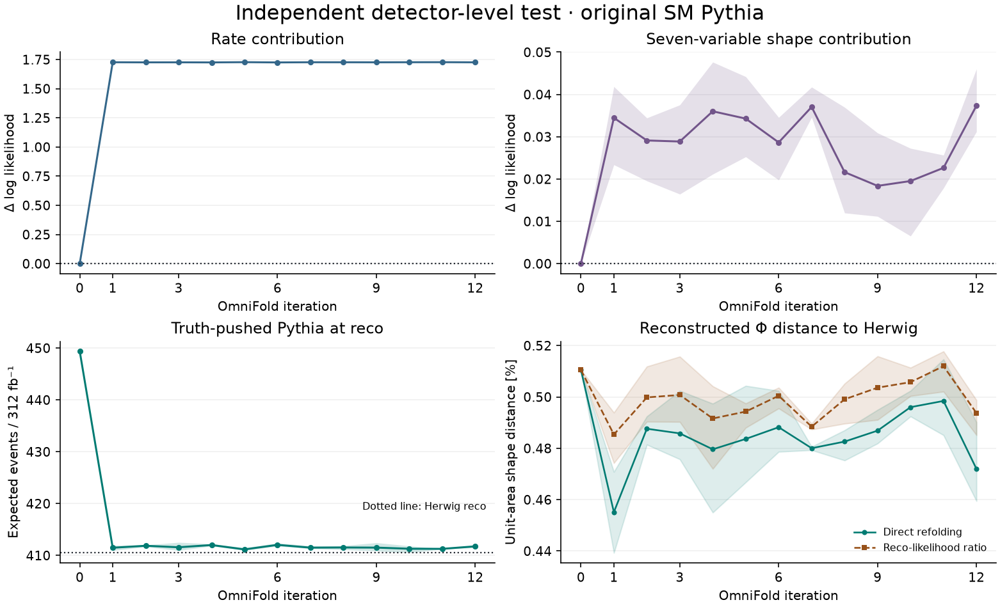

High-statistics closure · Plot gallery
Original Pythia ggH through OmniFold
The starting sample is undeformed SM Pythia ggH. The target is Herwig ggH with cHB = +0.1 at Λ = 1 TeV. The same source fold, independent of training, is used throughout. Generator labels remove ZZ and reconstructed nonfiducial ggH exactly.
Fiducial truth after each push
At 312 fb⁻¹, the first truth push moves the fiducial prediction from 648.16 to 593.26 events. The Herwig reference is 592.86. The unit-area Φ distance starts at 0.454%, reaches 0.411% at iteration 1 and 0.407% at iteration 12. The yield correction is visible immediately. The Φ shape changes are small and vary in direction across iterations.

Does the detector-level agreement improve?
The reco-likelihood classifier learns the ratio of the updated to original Pythia densities at reconstruction level. Evaluating that ratio on independent Herwig events gives a detector-level comparison. Refolding also provides a direct cross-check using the simulated detector response.
The first update gains 1.761 expected log-likelihood units relative to original Pythia. The rate accounts for 1.726 and the seven-variable shape for 0.034. From iteration 1 to 12 the mean gain is +0.0023, with paired finite-MC standard error 0.0018. Individual seed changes span -0.0066 to +0.0117. These detector comparisons support the first update and do not establish a preferred later iteration or fiducial prior independence.

Iteration values
Yields are expected events at 312 fb⁻¹. The Herwig targets are 592.86 fiducial and 410.54 reconstructed. Shape distances are half the sum of absolute differences in normalized Φ bin fractions. Distances in the table use seed-averaged signed bin yields.
| Iteration | Fiducial yield | Fiducial Φ distance | Reco yield | Refolded Φ distance | Δℓ rate | Δℓ shape | Δℓ total |
|---|---|---|---|---|---|---|---|
| 0 | 648.16 | 0.454% | 449.36 | 0.511% | +0.0000 | +0.0000 | +0.0000 |
| 1 | 593.26 | 0.411% | 411.47 | 0.450% | +1.7263 | +0.0345 | +1.7607 |
| 2 | 593.78 | 0.435% | 411.85 | 0.478% | +1.7254 | +0.0291 | +1.7545 |
| 3 | 593.34 | 0.432% | 411.56 | 0.486% | +1.7257 | +0.0289 | +1.7546 |
| 4 | 593.92 | 0.424% | 411.99 | 0.479% | +1.7249 | +0.0360 | +1.7610 |
| 5 | 592.73 | 0.436% | 411.15 | 0.478% | +1.7270 | +0.0343 | +1.7613 |
| 6 | 594.01 | 0.443% | 412.02 | 0.483% | +1.7248 | +0.0287 | +1.7534 |
| 7 | 593.26 | 0.440% | 411.49 | 0.479% | +1.7264 | +0.0370 | +1.7634 |
| 8 | 593.35 | 0.441% | 411.52 | 0.481% | +1.7262 | +0.0216 | +1.7479 |
| 9 | 593.33 | 0.433% | 411.50 | 0.481% | +1.7259 | +0.0184 | +1.7442 |
| 10 | 593.04 | 0.452% | 411.28 | 0.494% | +1.7265 | +0.0195 | +1.7460 |
| 11 | 592.98 | 0.434% | 411.26 | 0.498% | +1.7269 | +0.0226 | +1.7496 |
| 12 | 593.62 | 0.407% | 411.74 | 0.469% | +1.7257 | +0.0373 | +1.7631 |
Detector likelihood, normalization and finite-MC precision
The test contains 1,227,871 reconstructed Herwig events and 1,338,566 reconstructed Pythia events on fold 1. It uses signed simulation weights in the 115–130 GeV Higgs window. The truth panels additionally include fiducial events missed at reconstruction. The confirmation fold remains reserved.
Write H for the Herwig reco yield and Y0, Yk for the original and directly refolded Pythia reco yields. The rate contribution is H log(Yk/Y0) − (Yk − Y0). For the classifier’s raw shape ratio rk(x), the shape contribution is the signed Herwig sum of log rk(x) minus H log ⟨rk⟩original Pythia. This integral normalizes the estimated shape density for likelihood evaluation. It leaves the trained classifier and unfolding weights unchanged. A constant shape ratio contributes zero.
The two contributions sum to the extended log-likelihood difference from iteration 0 at the specified luminosity. Scores average the three seed results. The paired jackknife deletes each of 64 source-event blocks in turn across all iterations, conditional on the fitted networks. Training-seed variation is reported separately.
What the two tilted priors test
The prior test reuses every original Pythia event and its reconstructed partner. For truth coordinates z, the positive tilt multiplies its signed weight by exp(g(z)), the negative tilt by exp(−g(z)). Each is rescaled to the same starting fiducial yield. For example, g contains 0.28 cos(2Φ). With the other coordinates fixed, the positive tilt increases the relative weight at Φ = 0 versus Φ = π/2 by exp(0.56) ≈ 1.75. The negative tilt multiplies the same relative weight by about 0.57. The Herwig target and the injected coefficient are identical in all three runs.